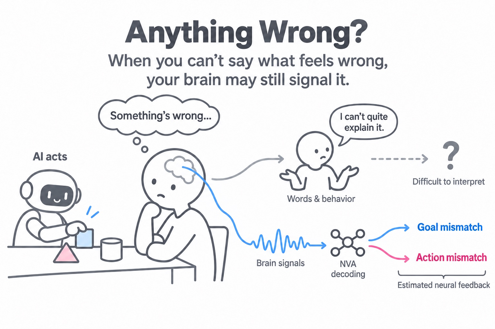

NEURAL VALUE ALIGNMENT
Anything Wrong?
When you can’t say what feels wrong,
your brain may still signal it.
TL;DR
An AI’s behavior can feel wrong even when we struggle to explain why. NVA explores brain signals as feedback about mismatches in goals and actions that words and behavior may not clearly reveal.

EXPLORE THE IDEA
Where do expectations diverge?
What we want to achieve. How we expect actions to unfold.
Select a landscape to reshape it. Drag its center to move it.
Human value
Goal mismatchReward prediction error · RPE proxy
Action mismatchState prediction error · SPE proxy
Spread changes the curves; these 0–1 proxies show center gaps, not measured neural signals.